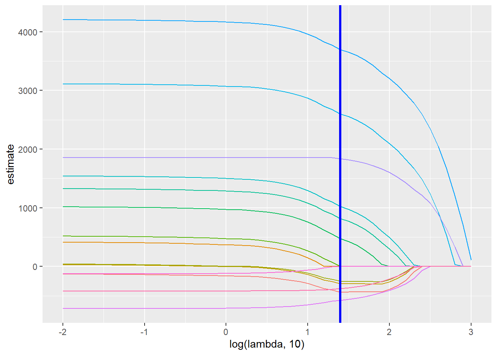

set.seed(7)#load data and clean data
death_df = read_csv("data/Vital_Statistics_Deaths_by_Region_and_Age-Group_by_Selected_Cause_of_Death___Beginning_2003.csv") %>%
janitor::clean_names() %>%
filter(selected_cause_of_death == "Diseases of the Heart",
race_or_ethnicity != "Not Stated") %>%
mutate(
age_group = as.factor(age_group),
age_group = fct_recode(
age_group, "<1" = "1", "1-9" = "2", "10-19" = "3", "20-24" = "4", "25-34" = "5", "35-44"="6", "45-54" = "7", "55-64" = "8", "65-74" = "9", "75-84" = "10", "85+" = "11"),
sex = as.factor(sex),
sex = fct_recode(sex, "M" = "1", "F" = "2"),
race_or_ethnicity = as.factor(race_or_ethnicity),
race_or_ethnicity = fct_recode(race_or_ethnicity, "White Non Hispanic" = "1",
"Black Non Hispanic" = "2", "Hispanic" = "3",
"Other Non Hispanic" = "4")
) %>%
sample_n(200) %>%
select(deaths, sex, age_group, race_or_ethnicity)#plot lasso
lasso_plot = broom::tidy(lasso_fit) %>%
select(term, lambda, estimate) %>%
complete(term, lambda, fill = list(estimate = 0) ) %>%
filter(term != "(Intercept)") %>%
ggplot(aes(x = log(lambda, 10), y = estimate, group = term, color = term)) +
geom_path() +
geom_vline(xintercept = log(lambda_opt, 10), color = "blue", size = 1.2) +
theme(legend.position = "none")
lasso_plot
From the Lasso plot, we can see that most of our variables did not reach zero before optimal lambda value. Therefore, we could include all the variables.
#Generate lasso result
lasso_fit =
glmnet(x, y, lambda = lambda_opt)
lasso_result = lasso_fit %>% broom::tidy()From our preliminary analysis, we can conclude that age groups 75-84, 85+ and race group Hispanic are most susceptible to heart disease related death in New York City between 2003 to 2019. This results indicated racial disparity in health in NYC.